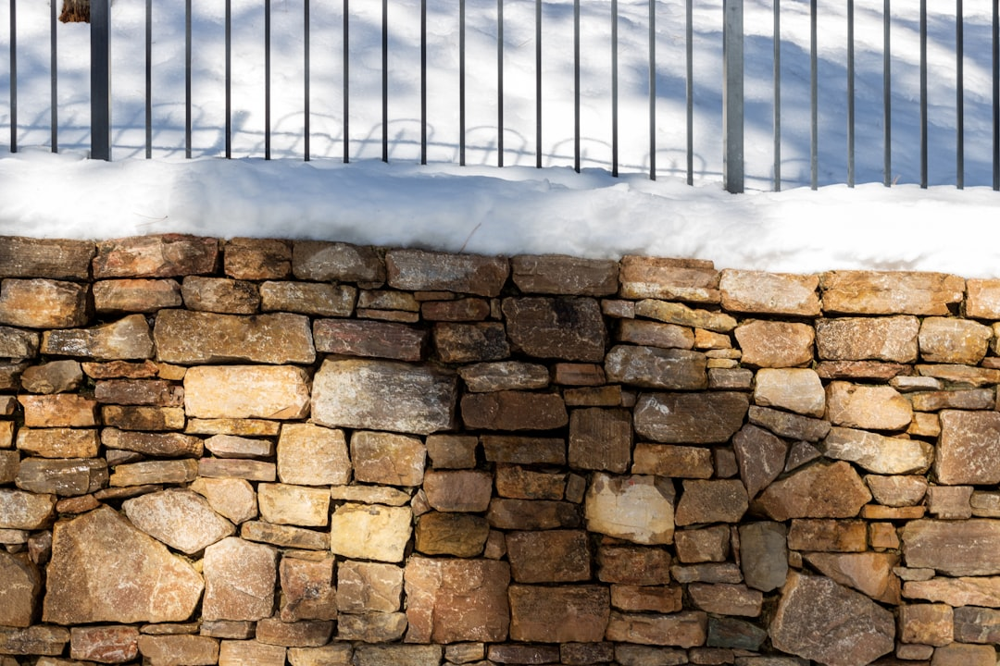

For most Perth projects, the deciding inputs are retained height, soil condition, drainage and whether approval steps attach to the job. The published guide puts installed wall face at roughly $250 to $600 per square metre, excluding GST, excavation, drainage and difficult access. It also says a building permit generally applies once more than 0.5 metres of ground is retained, and that boundary, adjoining land and related building work can change the approval path even below that height.
For Perth homeowners comparing retaining walls perth options, the useful first step is to match the wall system to the block, the retained height, the drainage path and the approval pathway before comparing finishes.
Retaining Walls Perth Explained
Perth Retaining Walls makes a useful distinction for local owners. A block on the coastal sand plain can present a different job from one in the Darling Scarp foothills. On sandy ground, the wall may be there to hold a level pad or stop a face from ravelling. In the foothills, steeper slopes, shallow soil over rock and winter drainage can become the controlling issues.
That changes what a sensible first enquiry looks like. Instead of asking only for a price per metre, prepare the basic site facts that drive scope: approximate retained height, overall run length, slope, access for machinery, whether the wall sits near a boundary and whether nearby work such as paving, fencing or a driveway ties into the same area.
The published service list includes limestone, post and panel concrete, besser block, timber sleeper and rock or boulder walls. Those are not interchangeable categories. They are different responses to ground, access and wall height.
Why similar rates can hide different scope
The broad published range, roughly $250 to $600 per square metre of installed wall face, is only useful if you read the exclusions with the same care as the headline number. The guide excludes GST, excavation, drainage and difficult access. Two quotes can therefore look close on the wall face and still represent very different total jobs.
That is especially important when one proposal includes back of wall drainage, spoil removal and site access assumptions, while another leaves those items to be confirmed later. A lower figure can simply mean more of the real work is outside the stated scope.
- Ask whether excavation and spoil removal are included.
- Ask whether drainage or subsoil measures are written into the price.
- Ask what access the quote assumes for machinery and materials.
- Ask whether the figure is fixed price or subject to site findings.
If you want a second editorial checklist while comparing proposals, this guide to wall planning in Perth is one useful cross reference.
Approval checks can change the whole job
The guide says a retaining wall in Western Australia generally needs a building permit once it retains more than 0.5 metres of ground. It also says a wall of any height can still need a permit if it is tied to other building work, affects or protects adjoining land, or sits on a boundary wall or substantial dividing fence.
That means height is only the first compliance filter. The same published material points owners to AS 4678 and the Certificate of Design Compliance, BA3, process. Those references matter because they signal when the work moves beyond a simple landscape feature into a job that may require design documentation and a clearer approval pathway.
Before choosing a material, write down the retained height, note whether adjoining land is affected and list any related works nearby. Then confirm how the local government treats that combination. It is a faster way to narrow options than redesigning after quotes are already in.
How the common systems separate on real sites
The published guide says limestone is Perth's most common retaining wall material, quarried locally and well suited to the sandy Swan Coastal Plain. It also says post and panel concrete systems suit taller or longer runs, while timber sleeper works well for low garden terracing. Those distinctions are more useful than broad claims about one wall type being best.
On a modest sandy site, the deciding questions may be drainage detail, excavation scope and finish. On a foothills block, slope and shallow rock can push structural considerations to the front. A system that looks economical in a simple comparison can become harder to build if access is tight or the drainage layout is more involved than expected.
For that reason, compare complete wall systems rather than isolated materials. One proposal may include drainage, compliance steps and site preparation from the start. Another may price only the visible wall and leave the harder parts for later variations.
Who this guide helps and what to prepare
This guide is most useful for owners planning a new wall, replacing a failed wall or comparing repair proposals where drainage, retained ground and access need to be reassessed. It is also relevant when a site sits near a boundary or when nearby building work could affect the approval path.
Before requesting prices, prepare clear photos, approximate length, approximate retained height and a short note on what the ground appears to be doing. If the site is sandy, say so. If the project is in foothill areas such as Kalamunda or Roleystone, note the slope and whether rock seems close to surface. That gives a contractor a better starting point when discussing limestone, post and panel or another system.
For the broader renovation budget and contract context, the supplied authority list points to ASIC Moneysmart, the Housing Industry Association and Master Builders Australia. Those sources are useful for owner questions around planning, budgeting and contract review, even though the site specific wall details still need to come from the project itself.
- Record the site basics. Note approximate retained height, run length, slope and access before seeking prices.
- Describe the ground. State whether the block appears sandy, rocky or close to surface limestone so the wall system can be matched to the site.
- Check quote inclusions. Confirm excavation, drainage, spoil removal and compliance related items in writing before comparing totals.
- Confirm approvals early. Ask the local government how it treats the wall if height, boundaries or related building work are part of the job.
| Wall type | Often suits | Check before accepting a quote |
|---|---|---|
| Limestone | Common residential walls on sandy sites | Whether drainage, excavation and access are included |
| Post and panel concrete | Taller or longer runs | Whether design and permit steps are part of the price |
| Timber sleeper | Low garden terracing | Whether drainage and replacement scope are stated |
| Besser block or engineered systems | Projects needing a more structural response | Whether AS 4678 and BA3 related documents are included |
Common questions
Do all walls in WA need a permit? No. The published guide says a wall generally needs a building permit once it retains more than 0.5 metres of ground. It also says a wall of any height can still need one if it is tied to other building work, affects or protects adjoining land, or sits on a boundary wall or substantial dividing fence.
Why can two quotes for a similar wall be far apart? The published cost range excludes GST, excavation, drainage and difficult access. One contractor may include those items and any compliance steps from the start, while another may price only the visible wall face.
Is limestone always the right choice on a Perth block? Not always. The guide says limestone is common and suits the sandy Swan Coastal Plain well, but it also says post and panel concrete can suit taller or longer runs and timber sleeper can work for low garden terracing. Height, access, slope and drainage still need to be tested on the actual site.
This guide covers how Perth property owners can compare wall systems, permit triggers, drainage scope and quote detail before committing to a retaining wall project.